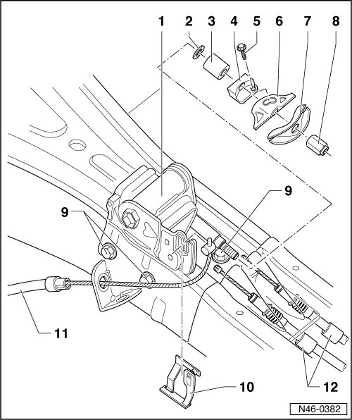

Parking Brake Control: Locations
Transfer Module Assembly Overview

1 Transfer module
2 Washer
3 Buffer
4 Cable anchor bracket
5 Torx bolt
6 Cable anchor
7 Compensator bracket
8 Nut
9 Bolt, 23 Nm
10 Clip
11 Front brake cable
• Removing and installing, refer to --> [ Front Brake Cable ] Front Brake Cable.
12 Rear brake cable
• Removing and installing, refer to --> [ Rear Brake Cable ] Rear Brake Cable.